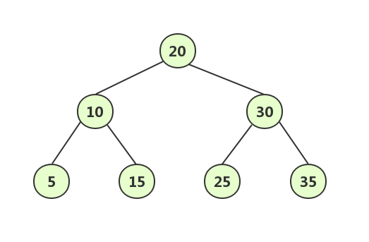
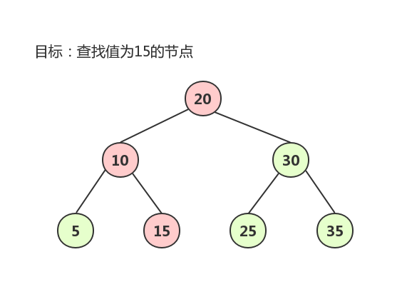
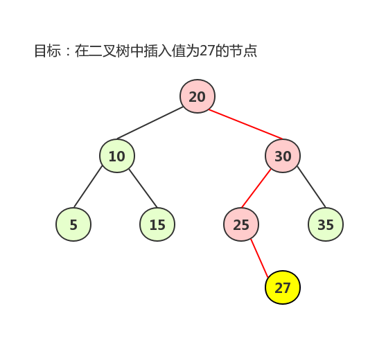
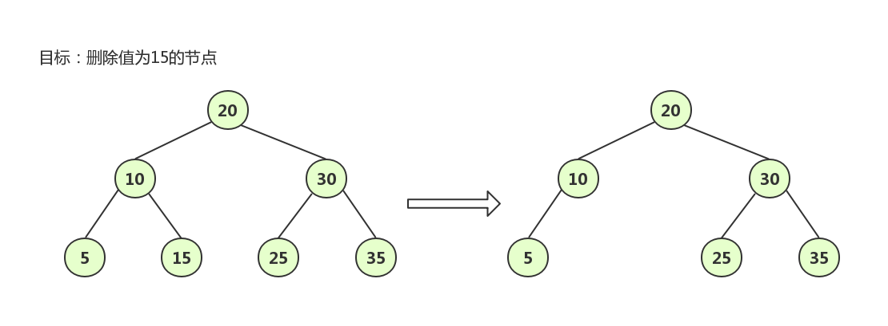
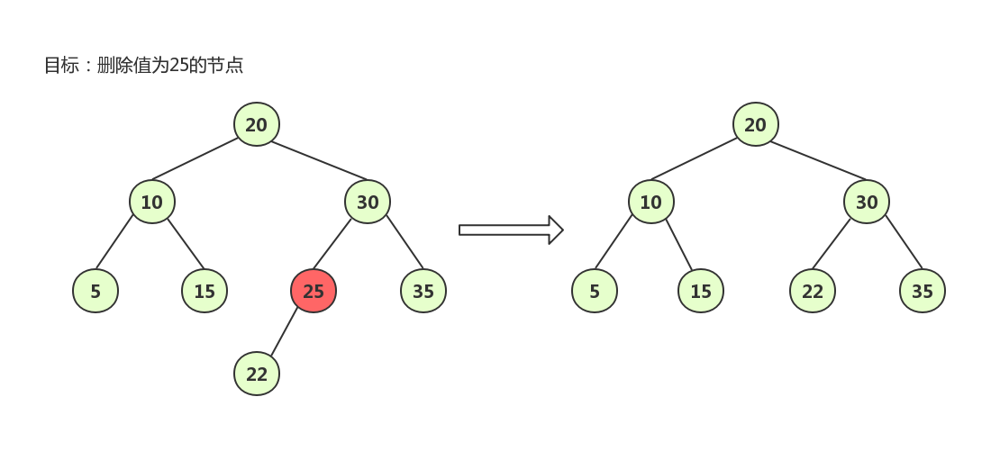
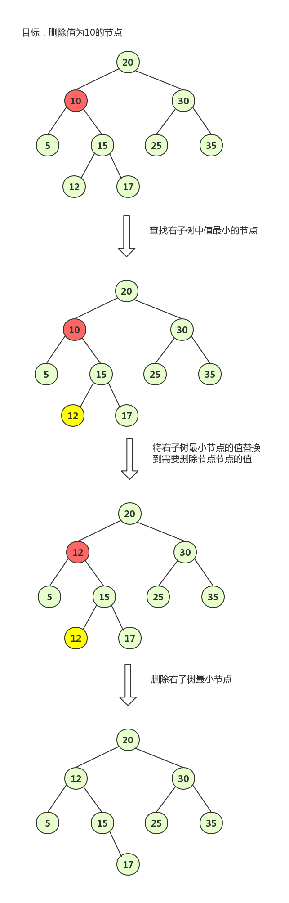

本文为王争老师在『极客时间』中的课程《数据结构与算法之美》的学习笔记，想要学习原文的同学购买相关课程学习。如有侵权请联系作者删除。
二叉查找树的理解
二叉查找树是一种特殊的二叉树，它支持动态的数据集合的快速插入、删除和查找操作。二叉查找树的一般结构如下图所示：

从上图可以观察到二叉查找树的一个重要特性树中的任意一个节点，其左子树中的每个节点的值都小于该节点的值，右子树中的每个节点的值都大于该节点的值。
二叉查找树的查找操作

对于二叉查找树的查找操作主要步骤如下：
- 先获取根节点，如果根节点的值等于需要查找的值，则返回；
- 如果根节点的值小于需要查找的值，则在右子树中递归查找；
- 如果根节点的值大于需要查找的值，则在左子树中递归查找。
查找的代码如下所示：1
2
3
4
5
6
7
8
9
10
11
12
13
14
15
16
17
18
19
20
21
22
23
24
25
26public class BinarySearchTree {
public static class Node {
private int data;
private Node left;
private Node right;
public Node(int data) {
this.data = data;
}
}
private Node tree;
public Node find(int data) {
Node p = tree;
while (p != null) {
if(p.data < data)
p = p.right;
else if(p.data > data)
p = p.left;
else
return p;
}
return null;
}
}
二叉查找树的插入操作

对于二叉查找树的插入操作时，新插入节点一般都是插入到叶子节点，从根节点开始依次比较新插入节点的值与当前节点值的大小关系，具体步骤如下：
- 如果新插入节点的值大于当前节点的值，并且当前节点的右子树为空，则将新插入的节点插入到右子节点的位置；如果当前节点的右子树不可空，则递归遍历右子树，查找插入的位置；
- 如果新插入节点的值小于当前节点的值，并且当前节点的左子树为空，则将新插入的节点插入到左子节点的位置；如果当前节点的左子树不为空，则递归遍历左子树，查找插入的位置。
插入的代码如下所示：1
2
3
4
5
6
7
8
9
10
11
12
13
14
15
16
17
18
19
20
21
22
23
24
25
26
27
28
29
30
31
32
33
34
35
36
37
38public class BinarySearchTree {
public static class Node {
private int data;
private Node left;
private Node right;
public Node(int data) {
this.data = data;
}
}
private Node tree;
public void insert(int data) {
if (tree == null) {
tree = new Node(data);
return;
}
Node p = tree;
while (p != null) {
if (data > p.data) {
if (p.right == null) {
p.right = new Node(data);
return;
}
p = p.right;
} else { // data < p.data
if (p.left == null) {
p.left = new Node(data);
return;
}
p = p.left;
}
}
}
}
二叉查找树的删除操作
对于二叉查找树的删除操作主要分为三种情况，下面分别讨论：
当删除的节点中没有子节点，只需要将父节点中指向该节点的指针设为空即可；
当删除的节点只有一个子节点（只有左子节点或者右子节点），只需要更新父节点中指向删除节点的指针，让该指针指向删除节点的子节点即可；
当删除的节点有两个节点时，需要找到该节点右子树中值最小的节点，把它替换到删除节点上，然后删除找到的右子树中值最小的节点。

删除的代码如下所示：1
2
3
4
5
6
7
8
9
10
11
12
13
14
15
16
17
18
19
20
21
22
23
24
25
26
27
28
29
30
31
32
33
34
35
36
37
38
39
40
41
42
43
44
45
46
47
48
49
50
51
52
53
54
55
56public class BinarySearchTree {
public static class Node {
private int data;
private Node left;
private Node right;
public Node(int data) {
this.data = data;
}
}
private Node tree;
public void delete(int data) {
Node p = tree; // p 指向要删除的节点，初始化指向根节点
Node pp = null; // pp 记录的是 p 的父节点
while (p != null && p.data != data) {
pp = p;
if (data > p.data)
p = p.right;
else p = p.left;
}
if (p == null) return; // 没有找到
// 要删除的节点有两个子节点
if (p.left != null && p.right != null) { // 查找右子树中最小节点
Node minP = p.right;
Node minPP = p; // minPP 表示 minP 的父节点
while (minP.left != null) {
minPP = minP;
minP = minP.left;
}
p.data = minP.data; // 将 minP 的数据替换到 p 中
p = minP; // 下面就变成了删除 minP 了
pp = minPP;
}
// 删除节点是叶子节点或者仅有一个子节点
Node child; // p 的子节点
if (p.left != null)
child = p.left;
else if (p.right != null)
child = p.right;
else
child = null;
// 删除的是根节点
if (pp == null)
tree = child;
else if (pp.left == p)
pp.left = child;
else
pp.right = child;
}
}